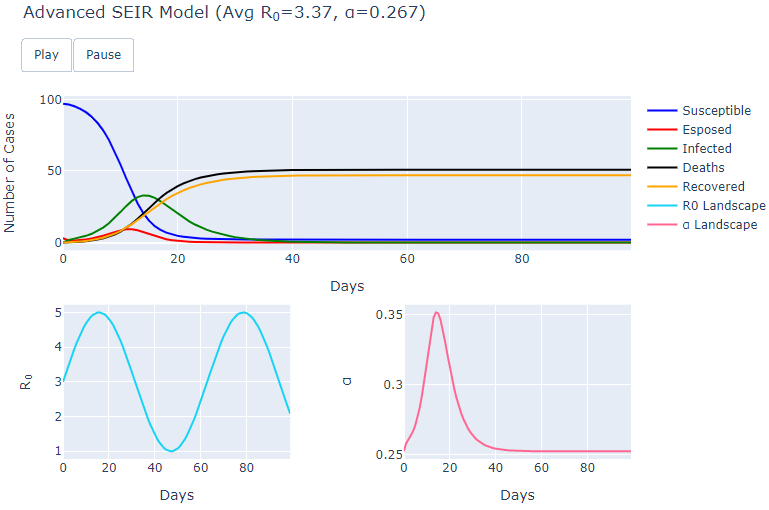
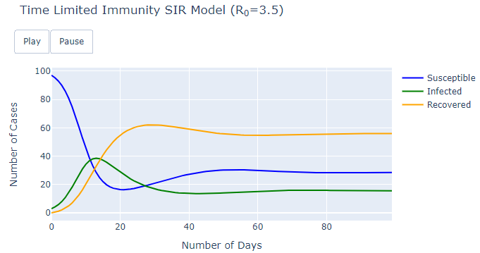
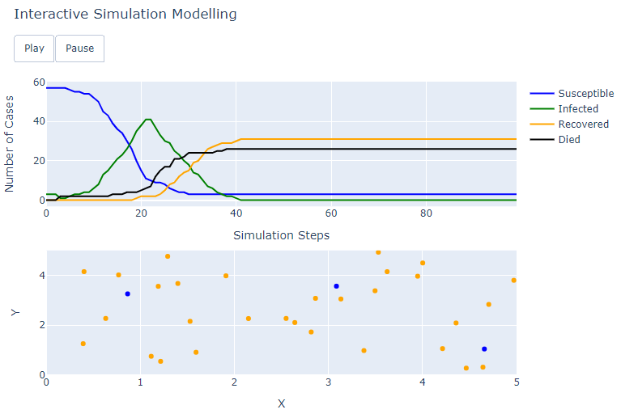
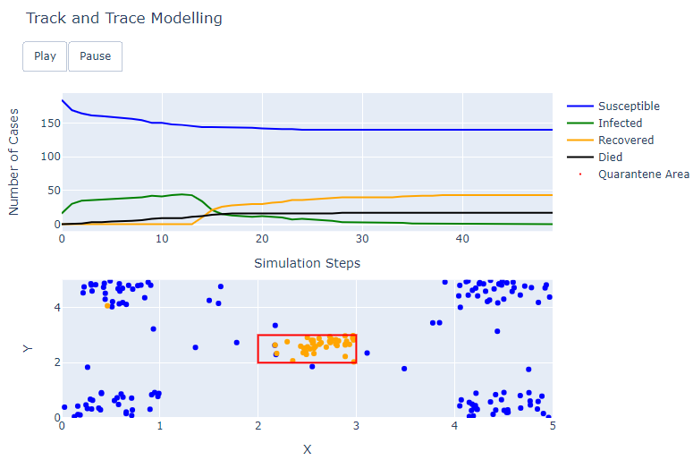
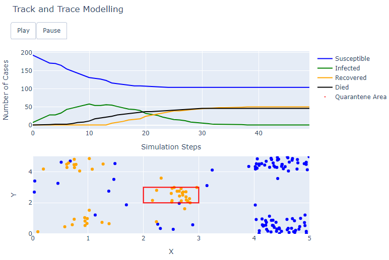
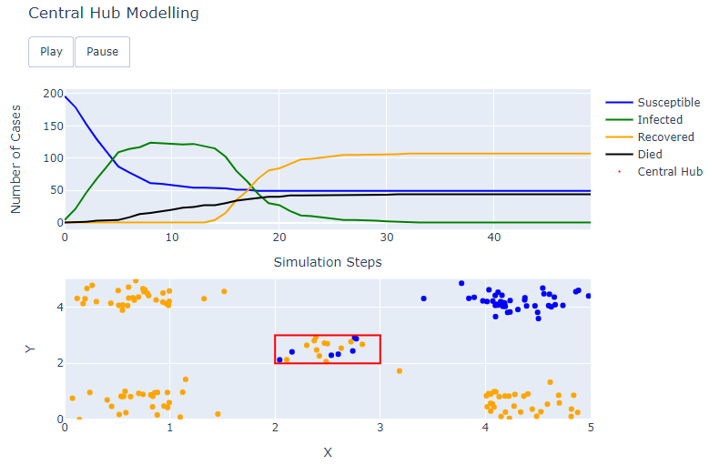
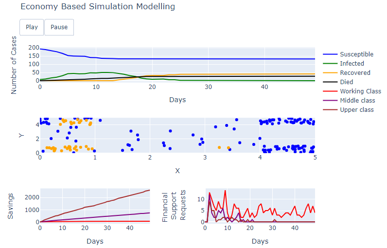
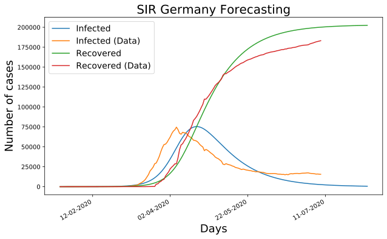
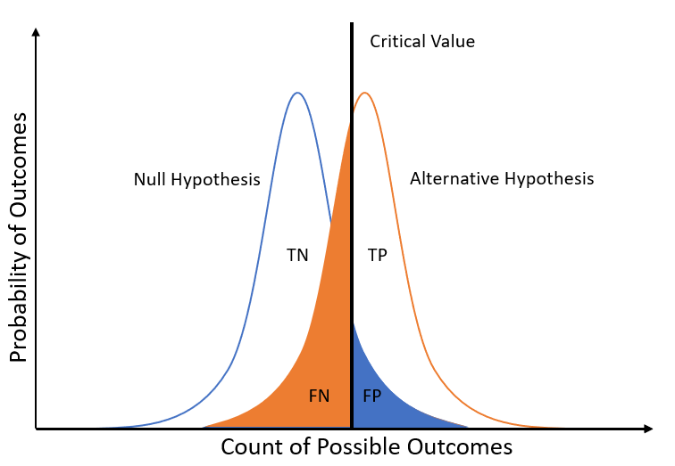
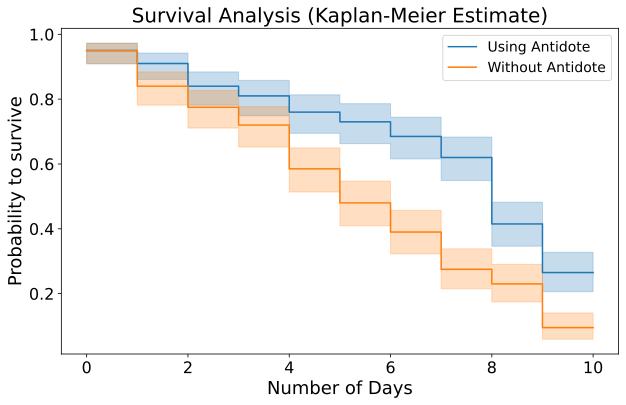

## Causal Reasoning in Machine Learning
### Motivations Nowadays Machine Learning technologies relies just on correlations between the different features. Although, this approach can possibly lead to wrong conclusions since correlation does not necessarily imply causation.
### Motivations Three of the main limitations of nowadays Machine Learning and Deep Learning models are: - Robustness - Explainability - Data Dependency
### Causality Hierarchy 
Compartmental Models
#### SIR 
#### SEIR 
#### Advanced SEIR (Sigmoid)
#### Advanced SEIR (Sinusoid) 
#### Time Limited Immunity 
#### Vaccination & Time Limited Immunity SIR 
Agent Based Modelling
#### Population Modelling 
#### Perfect Track and Trace 
#### Imperfect Track and Trace 
#### Central Hubs 
#### Finance Simulation 
COVID-19 Analysis
#### SIR Time Series Estimation 
#### Clinical Trials 
#### Coronavirus comorbidities 
### Conclusion Overall, this project had a positive outcome and all the objectives established in the Project Brief have been accomplished.
### Further Advancements Some examples of further advancements which could be included are: - Make use of real data about Clinical Trials and Coronavirus comorbidities. - Introduce other causality related techniques such as Knowledge Graphs and Explainable AI. - Make use of open source causality libraries such as Microsoft DoWhy and Uber CausalML.
Thank you for your attention!